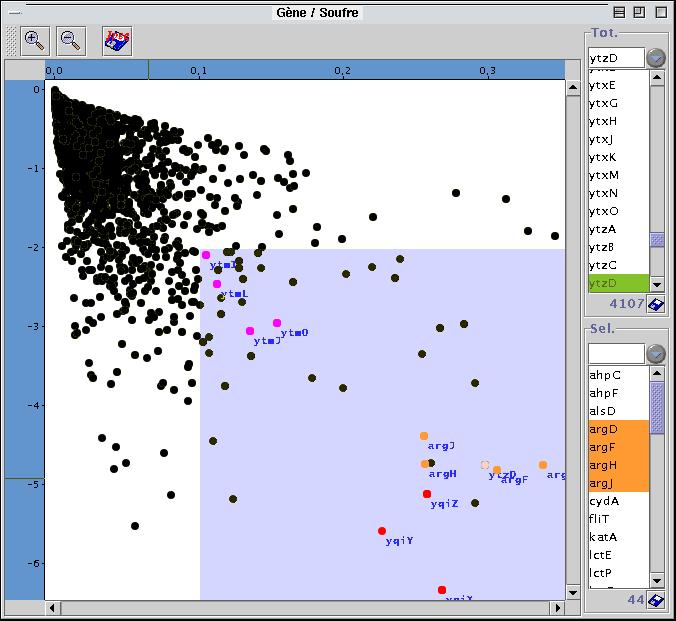

On sélectionne
une zone de l'image en maintenant la touche de la souris enfoncée
et en la déplaçant. Les nom des points appartenant dans la
zone sélectionnée, apparaissent dans la liste "Sel" (en bas).
La liste "tot "contient les noms de tous les points de l'image. La zone
de texte au dessus des liste permet de sélectionner facilement les
éléments de la liste débutant par un même préfixe
(ou se placer rapidement à un niveau de la liste qui est trié
dans l'ordre alphabétique). Lorsqu'on sélectionne un ou plusieurs
noms dans une des listes, les points correspondant changent temporairement
de couleur dans l'image. On peut modifier de manière plus
durable la couleur d'un point donné ou faire afficher son
nom sur l'image en sélectionnant son nom dans une des listes et
en utilisant le menu à côté de la zone texte de la
liste considérée (menu matérialisé par l'icone
"flêche ver le bas"). Ceci peut également être fait
directement sur l'image en se plaçant sur le point et en cliquant
avec le bouton droit de la souris, ce qui fait apparaître un menu
contextuel. Une dizaines de couleurs sont disponibles et reconfigurables
via le menu Préférences.
La barre
d'outils contient les boutons de zoom, le bouton suivant enregistre l'image
au format jpeg,
Dans le
cas ou l'image s'y prète, la barre d'outil contient également
un bouton qui fait apparaître ou disparaître la droite de régression,
une zone de texte contient l'equation de la droite de régression
et un bouton "point barré" permet de sortir les points de la zone
de sélection du calcul de la droite de régression.